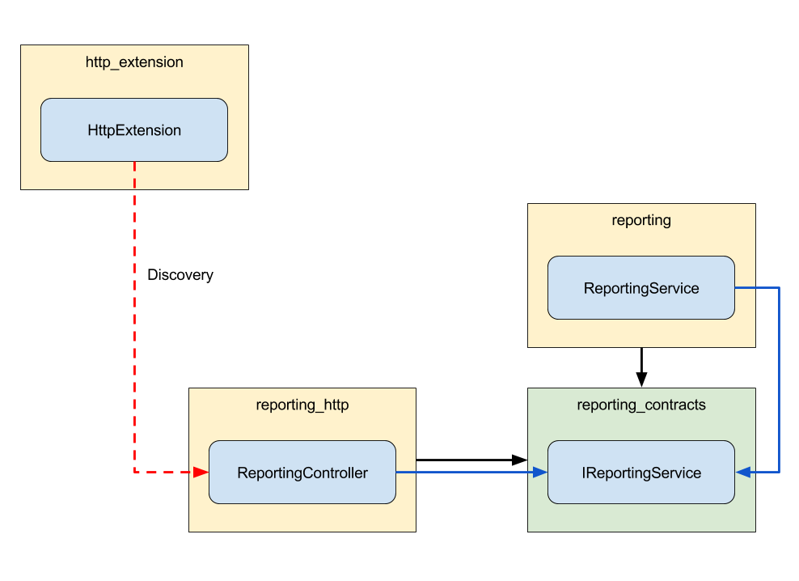
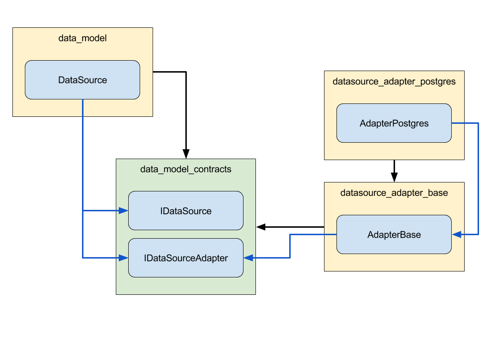

Structure
Each module can be placed inside a category. For consistency we apply a naming convention to these categories:
| package name | description |
|---|---|
| messagebus | the isomorphic base module |
| messagebus_contracts | the interfaces that represent the base module |
| messagebus_http | the http bridge for the base module |
| messagebus_adapter_faye | an adapter for the base module |
Contracts
We learned already that modules are regular npm packages with dependencies. When dealing with a stack of this size we need to make sure that every component is exchangable through dependency injection without changing the code.
Imagine we have a class ReportingService in a module reporting that depends on the class LoggingService from the module logging.
The npm package reporting would not have a dependency on logging, but rather on logging_contracts.
Also the class ReportingService would not reference the class LoggingService. Instead it uses the interface ILoggingService from logging_contracts.

Now that the reporting module has no references to the implementation, we can completely change the implementation through dependency injection as long as our replacement fulfills the contract (implements the interface).
Bridges
When we need to tie one base module to another we want to do it in a way that keeps them loosely coupled. This means that the implementations we tied together are completely independent from one another.
We achieve the loose coupling by putting all the glue that ties modules together into bridge modules.
One example you will often find are http-bridges. Normally base module mostly contain services that encapsulate logic.
If we want to expose service logic via a HTTP endpoint we have to define which HTTP routes and methods can be used to execute the service logic. The code that does this resides in the bridge module.

Usually bridge modules are discovered using Inversion of Control (see 3.1).
Adapters
Adapters are very similar to bridges, but have one important difference. They provide the glue needed to tie a base implementation of our stack to a third party component or technology outside of our stack.
The prime example for this are the data source adapters used in our stack.
For each third party database technology we want to support, we need an adapter that knows how our generic data layer can be tied to the database so that both will work together.

Extensions
The entry point for the whole stack is the AppBootstrapper. It uses the ExtensionBootstrapper to discover extensions. After discovering them the ExtensionBootstrapper has two phases. First it initializes all extensions by calling the initialize-method. Then it starts them by calling the start-method.
When the two phases have completed and the bootstrapper is done, the application is considered as started.
Although extensions are technically suited for all kinds of uses we solely use them to represent the communication endpoints of an application.
For example, the HttpExtension starts a HTTP server and discovers components that can register routes on the HTTP server. An AmqpExtension could do something similar to that with the AMQP protocol.